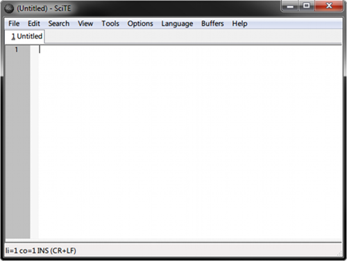

Приступая к работе
Программирование — это искусство, ремесло и наука о написании программ,
определяющих то, как компьютер будет работать. Эта книга научит вас писать
компьютерные программы с использованием языка программирования, разработанного в
компании Google, под названием Go.
Go — язык общего назначения с широкими возможностями и понятным синтаксисом.
Благодаря мультиплатформенности, надежной, хорошо документированной стандартной
библиотеке и ориентированности на удобные подходы к самой разработке, Go
является идеальным языком для первых шагов в программировании.
Процесс разработки приложений на Go (и на большинстве других языков
программирования) довольно прост:
- сбор требований,
- поиск решения,
- написание кода, реализующего решения,
- компиляция кода в исполняемый файл,
- запуск и тестирование программы.
Процесс этот итеративный (то есть повторяющийся много раз), и шаги, как правило,
совпадают. Но прежде чем мы напишем нашу первую программу на Go, нужно понять
несколько основных принципов.
Файлы и директории
Файл представляет собой набор данных, хранящийся в блоке с определенным именем.
Современные операционные системы (такие как Windows или Mac OS X) состоят из
миллионов файлов, содержащих большой объем различной информации — начиная от
текстовых документов и заканчивая программами и мультимедиа-файлами.
Файлы определенным образом хранятся в компьютере: все они имеют имя,
определенный размер (измеряемый в байтах) и соответствующий тип. Обычно тип
файла определяется по его расширению — части имени, которая стоит после
последней .. Например, файл, названный hello.txt, имеет расширение txt,
а значит содержит текстовую информацию.
Папки (также называемые директориями) используются для группирования нескольких
файлов.
Терминал
Большая часть взаимодействия с компьютером сейчас осуществляется с помощью
графического пользовательского интерфейса (GUI). Мы используем клавиатуру, мышь,
сенсорные экраны для взаимодействия с визуальными кнопками и другими
отображаемыми элементами.
Но так было не всегда. Перед GUI в ходу был терминал — простой текстовый
интерфейс к компьютеру, где вместо работы с кнопками на экране мы вводили
команды и получали ответы.
И хотя может показаться, что большая часть компьютерного мира оставила терминал
далеко позади как пережиток прошлого, правда в том, что терминал всё еще
остаётся фундаментальным пользовательским интерфейсом, используемым большинством
языков программирования на большинстве компьютеров. Go не исключение, поэтому
прежде чем писать программу на Go, понадобится элементарное понимание того, как
работает терминал.
Windows
Чтобы вызвать терминал (командную строку) в Windows, нужно нажать комбинацию
клавиш Win+R (удерживая клавишу с логотипом Windows нажмите R), ввести в
появившееся окно cmd.exe и нажать Enter. Вы должны увидеть черное окно,
похожее на то, что ниже:

По умолчанию командная строка запускается из вашей домашней директории (в моём
случае это C:\Users\caleb). Вы отдаёте команды компьютеру, набирая их в этом
окне и нажимая Enter. Попробуйте ввести команду dir, которая выводит
содержимое текущего каталога на экран. Вы должны увидеть что-то вроде этого:
C:\Users\caleb>dir
Volume in drive C has no label.
Volume Serial Number is B2F5-F125
Вы можете изменить текущий каталог с помощью команды cd. Например, там
наверняка есть директория под названием Desktop. Вы можете посмотреть её
содержимое, набрав cd Desktop, а затем dir. Чтобы вернуться в домашнюю
директорию, используйте специальное имя .. (две точки): cd ... Одна точка
обозначает текущий каталог (известен как рабочая директория), так что cd .
ничего не сделает. Конечно, существует намного больше команд, которые можно
использовать, но этих будет вполне достаточно для начала.
OSX
В OSX терминал можно найти, перейдя в Finder → Applications → Utilities →
Terminal. Вы увидите такое окно:

По умолчанию, командная строка запускается из вашей домашней директории (в моём
случае это /Users/caleb). Вы отдаёте команды компьютеру, набирая их в этом
окне и нажимая Enter. Попробуйте ввести команду ls, которая выводит содержимое
текущего каталога на экран. Вы должны увидеть что-то вроде этого:
caleb-min:~ caleb$ ls
Desktop Downloads Movies Pictures
Documents Library Music Public
Вы можете изменить текущий каталог с помощью команды cd. Например, там
наверняка есть директория под названием Desktop. Вы можете посмотреть её
содержимое набрав cd Desktop, а затем ls. Чтобы вернуться в домашнюю
директорию, используйте специальное имя .. (две точки): cd ... Одна точка
обозначает текущий каталог (известен как рабочая директория), так что cd .
ничего не сделает. Конечно, существует намного больше команд, которые можно
использовать, но этих будет вполне достаточно для начала.
Текстовый редактор
Основным инструментом программиста при разработке программного обеспечения
является текстовый редактор. Текстовые редакторы в целом похожи на программы
обработки текста (такие как Microsoft Word или OpenOffice), но в отличие от последних,
там отсутствует какое-либо форматирование (полужирный, курсив и т.п.), что
делает их ориентированными только на работу с простым текстом. Как в OSX, так и
в Windows, по умолчанию уже присутствует встроенные текстовые редакторы. Но они
очень ограничены в возможностях, поэтому я бы порекомендовал что-нибудь получше.
Дабы упростить установку, на сайте книги golang-book.com доступен
специальный инсталлятор. Он установит Go, необходимые инструменты, текстовый редактор и
настроит переменные окружения.
Windows
Для Windows инсталлятор установит текстовый редактор SciTe. Вы сможете найти его
в меню Пуск → Все программы → Go → SciTe. После запуска вы должны увидеть
такое окно:

Текстовый редактор содержит большую белую область для ввода текста. Слева от
этой области можно увидеть номера строк. В нижней части окна находится строка
состояния, где отображается информация о файле и вашем текущем местоположении в
нём (сейчас он говорит, что мы находимся у первого символа первой строки,
используется режим вставки текста, а окончания строк обозначаются в
Windows-стиле).
Вы можете открыть файл, выбрав его в диалоге, находящимся в меню File → Open.
Файлы могут быть сохранены с помощью меню File → Save или File → Save As.
Так как подобные действия вы будете выполнять достаточно часто, неплохо было
бы узнать сочетания клавиш для быстрого доступа к пунктам меню. Вот самые
распространённые из них:
Ctrl + S — сохранить текущий файл
Ctrl + X — вырезать выделенный текст (удалить его,
предварительно сохранив в буфере обмена, для возможной вставки позже)
Ctrl + C — скопировать выделенный фрагмент текста в
буфер обмена
Ctrl + V — вставить текст на место текущего положения
курсора из буфера обмена
Используйте клавиши со стрелками для навигации по файлу, Home для
перехода в начало строки, а End для перехода в конец
Удерживайте Shift при использовании клавиш навигации, чтобы
выделить фрагмент текста без использования мыши
Ctrl + F — открыть диалоговое окно поиска по
содержимому файла
OSX
Для OSX установщик поставит редактор Text Wrangler:

Как и Scite на Windows, окно Text Wrangler содержит большую белую область, где
вводится текст. Файлы могут быть открыты при помощи File → Open, а сохранены
с помощью File → Save или File → Save As. Вот некоторые полезные сочетания
клавиш:
⌘ + S — сохранить текущий файл
⌘ + X — вырезать выделенный текст (удалить его,
предварительно сохранив в буфере обмена, для возможной вставки позже)
⌘ + C — скопировать выделенный фрагмент текста в
буфер обмена
⌘ + V — вставить текст на место текущего положения
курсора из буфера обмена
Используйте клавиши со стрелками для навигации по файлу
⌘ + F — открыть диалоговое окно поиска по
содержимому файла
Инструментарий Go
Go — компилируемый язык программирования. Это означает, что исходный код
(написанный вами код) переводится в язык, понятный компьютеру. Поэтому, прежде
чем написать первую программу на Go, нужно разобраться с его компилятором.
Инсталлятор установит Go автоматически. Мы будем использовать первую версию
языка. (Больше информации можно найти на http://golang.org/)
Давайте убедимся, что всё работает. Откроем терминал и введём там:
В ответ вы должны увидеть что-то вроде:
Ваш номер версии может быть немного другим. Если вы получили ошибку, попробуйте
перезагрузить компьютер.
Инструментарий Go состоит из нескольких команд и подкоманд. Список всех
доступных команд можно увидеть, набрав:
О том, как их использовать, мы узнаем в следующих главах.